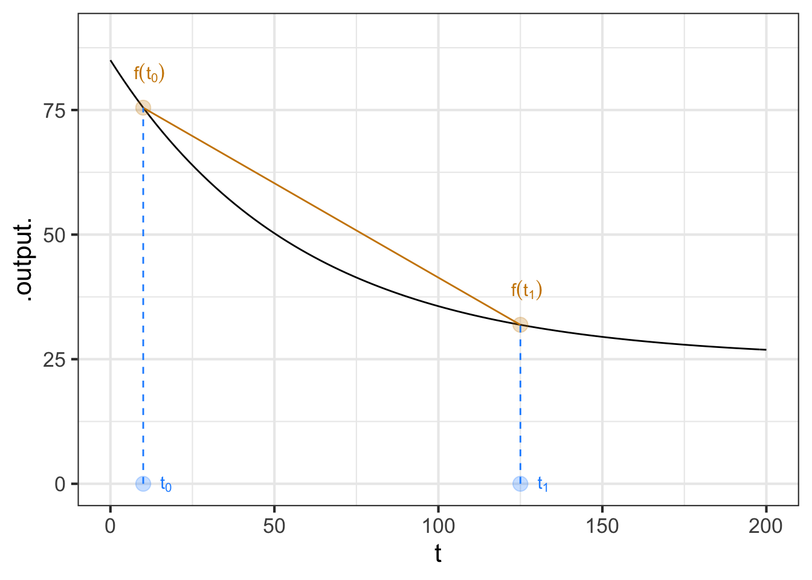
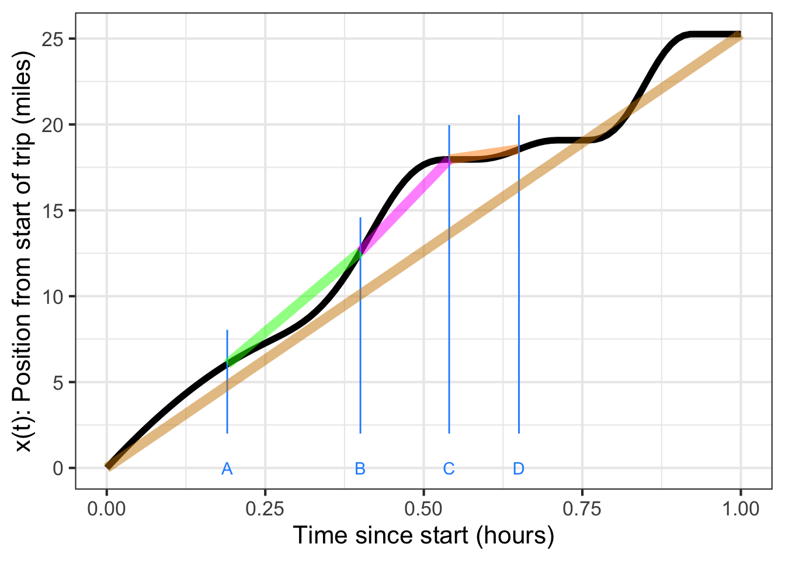
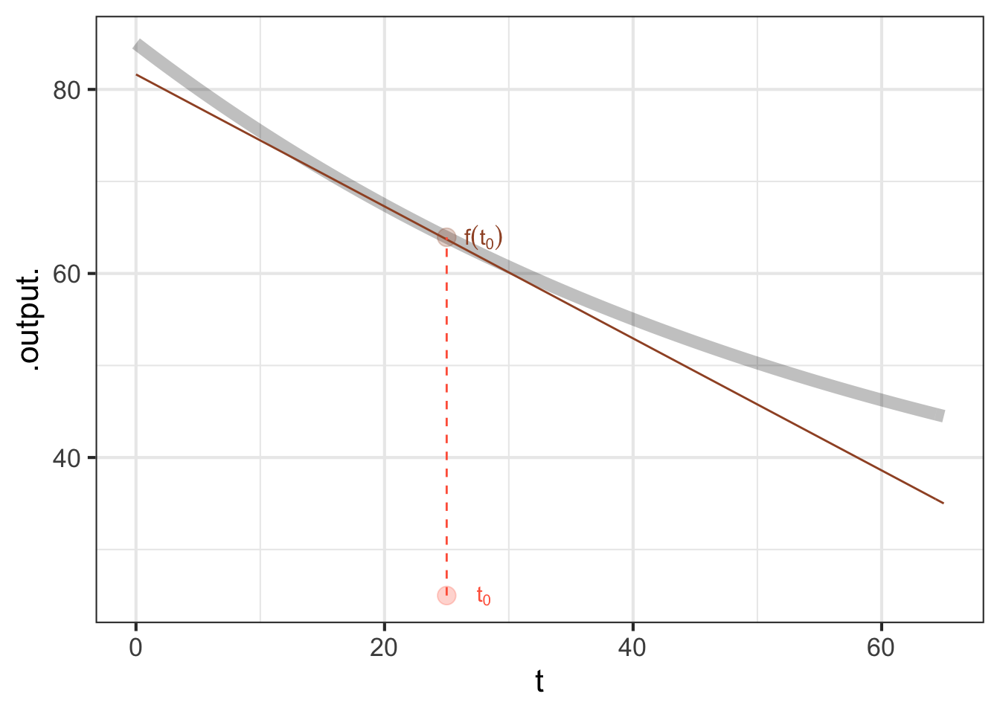
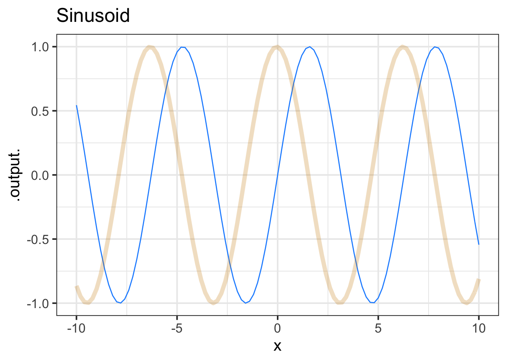
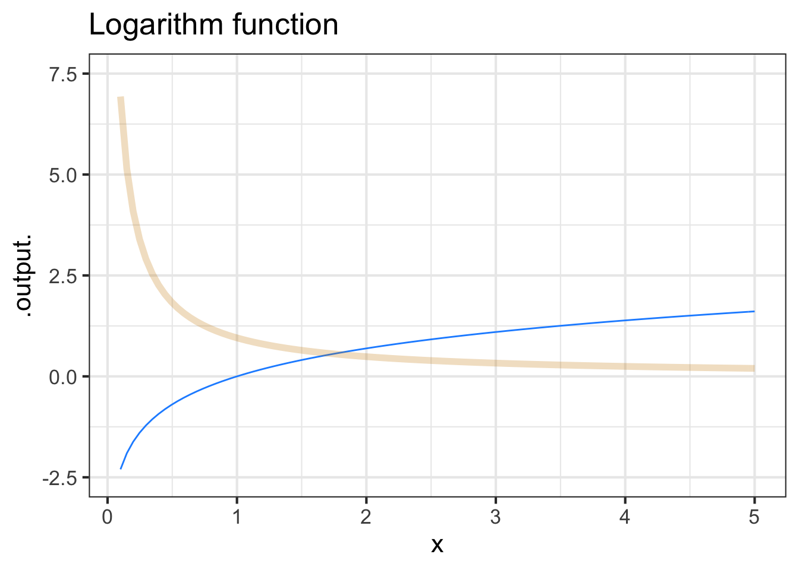
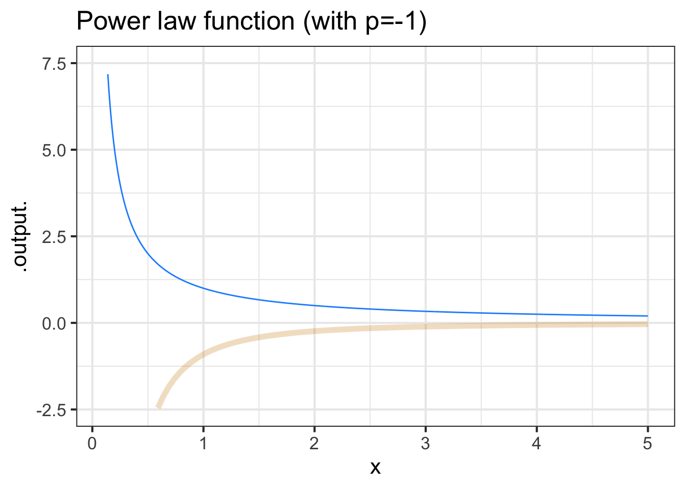
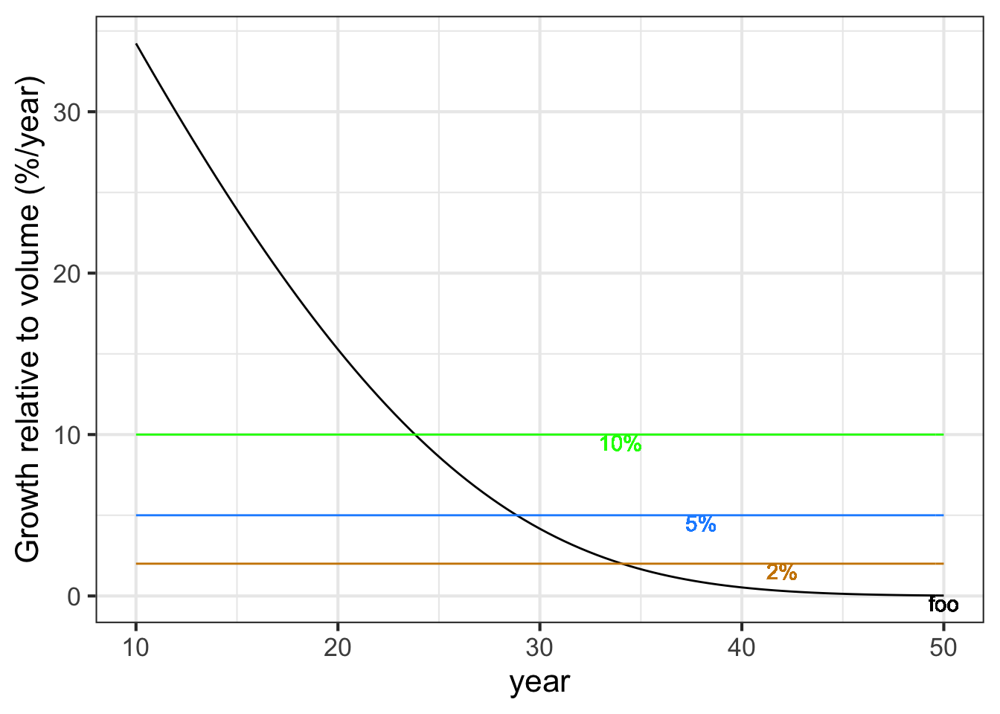

water <- makeFun(60*exp(-0.0173*t) + 25 ~ t)17 Rate of change
For our purposes, the definition of calculus is
The use of functions to model and explore continuous change
The agenda of this chapter is to give specific mathematical meaning to the word “change.”
17.1 Change and slope
You have an solid, intuitive sense of what “change” means. In mathematics, and especially the mathematics of functions, change has a very simple meaning that you have already touched on in your previous math education.
The word that encapsulates “change” in high-school math is slope. For instance, you’ve undoubtedly had to calculate the slope of a straight line in a graph. You learned about “rise” and “run” and how to read them from a graph or from a formula. The slope is the ratio: rise over run.
Everyone has a intuitive sense of the slope of a road or of a hillside. You learned to apply this intuition to reading graphs and the slope of a line. We’ll exploit the intuitive ability to read a landscape in order to introduce abstract mathematical ideas in a down-to-earth setting.
Mathematical modelers learn to think of “slope” abstractly, not just as referring to the incline of a road. For instance, the population of a country can change, as can the number of new cases of an epidemic disease, the temperature of a cup of coffee, or the distance from Earth of a spacecraft. A major part of learning calculus is generalizing and abstracting the mathematical concept of which “slope” is an example.
17.2 Continuous change
Most people are comfortable with the ideas of daily changes in temperature or monthly changes in credit-card debt or quarterly changes in the unemployment rate or annual changes in the height of a child. Such things are easy to record in, say, a spreadsheet. For example, as this paragraph is being written, the weather forecast for the next several days (in southeastern Colorado in mid-May) is
MAYBE SEASONAL CHANGE
| Day | High | Low | Description |
|---|---|---|---|
| Thursday | 73 | 43 | sunny |
| Friday | 72 | 48 | windy |
| Saturday | 66 | 48 | thunderstorms |
| Sunday | 68 | 43 | windy |
| Monday | 70 | 39 | sunny |
| Tuesday | 70 | 43 | sunny |
| Wednesday | 66 | 45 | partly cloudy |
Such data is said to be discrete. The day is listed, but not the time of day. The high temperature is forecast, but not the time of that high. The “description” is also discrete, one of the several words that are used to summarize the quality of the weather, as opposed to the quantity of rain.
Calculus is about continuous change. For instance, if the weather bureau provide a web interface that let me enter the date and time to the nearest fraction of a second, they would be giving a way to track the change continuously. Many physical processes are intrinsically continuous, for instance the motion (change in position) of a spacecraft or the height of the tide or the stress on a tree as a function of wind velocity.
Finding a language to describe continuous change—famously, the position of the moon or planets in their orbit, or the speed of a ball rolling down a ramp—was central to the emergence of what historians call the “Age of Enlightenment” or “modern scientific method.” The first complete presentation of that language was published by Isaac Newton based on his work in the 1660s. As you might guess, the name of the language is “calculus.”
17.3 Slope
You already know pretty much everything there is to know about the straight-line function,
Formula: \(f(x) \equiv a x + b\). The parameters \(a\) and \(b\) are the “slope” and “intercept” respectively. (More precisely, \(b\) is the “y-intercept.” But in statistics and modeling, it’s just the “intercept.”)
Reading parameters from a graph: You learned several ways to do this which are all equivalent. Maybe the easiest is to read the y-intercept off the graph. That’s \(b\). Then choose some non-zero \(x_0\) and read off from the graph the value of \(f(x_1)\). The slope is simply \[\frac{f(x_0) - b}{x_0}\]
The y-intercept method is a special case of a more general method, the two-point method, that you can use even if the y-intercept isn’t shown on the graph. Pick two specific values of \(x\), which we’ll call \(x_0\) and \(x_1\). Evalate the function at these input values and compute the rise over run: \[\text{rise over run} \equiv \frac{f(x_1) - f(x_0)}{x_1 - x_0}\] The rise over run is the slope of the straight line.
The y-intercept method is the same as the two-point method with \(x_1 = 0\).
Matching a straight-line function to data: You might not have been taught this formally, but the basic process is easy to imitate. The process is called line fitting or, in statistics and other fields, linear regression.
17.4 Average rate of change
Since the slope is our standard way of representing a relationship of change, we will often use it as a way of summarizing a function. To illustrate, consider the exponential model we constructed to match the cooling-water data in ?sec-fit-exponential:

During the interval \([t_0, t_1]\) the rate at which the water cools is higher at first and lower at the end. The average rate of change is a single number that summarizes the whole interval.
For all except straight-line models, the average rate of change depends on the interval chosen.
“Slope” is a natural metaphor when thinking of a function as a graph. But a more general way to describe the concept is the rate of change of the output with respect to the input. The change in the output from one end of the interval is \(f(x_1) - f(x_0)\), the change in the input is \(x_1 - x_0\). If the input is time (in hours), and the output is the position of a car (in miles), then the rate of change is miles-per-hour: the car’s velocity.
For a straight-line function—think of a car driving at constant speed on a highway—it doesn’t matter what you choose for \(x_1\) and \(x_0\) (so long as they are not identical). But for other functions, the choice does matter.
Imagine a graph of the position of a car along a road as in Figure 17.2. Over the course of an hour, the car travelled about 25 miles. In other words, the average speed is 25 miles/hour: the slope of the tan line segment. Given the traffic, sometimes the car was stopped (time C), sometimes crawling (time D) and sometimes much faster than average (time B).

During the interval from B to C, the car was travelling relatively fast. The slope of the \(\color{magenta}{\text{magenta}}\) segment connecting the position at times B and C is the average rate of change between times B and C. It’s easy to see that the average rate of change from B to C is larger than the overall average from \(t=0\) to \(t=1\). Calculating that slope is a matter of evaluating the position at the endpoints and dividing by the length of the interval.
What is the average rate of change in the car’s position during the interval \(t_B = 0.40\) to \(t_C=0.54\)?
The length of the interval is \(t_C - t_B = 0.54-0.40=0.14\).
Evaluating the function gives \(x(t_C) = 18\) and \(x(t_B) = 12.6\).
Rise is \(x(t_C) - x(t_B) = 18 - 12.6 = 5.4\).
Run is \(t_C - t_B = 0.54-0.40=0.14\).
The average rate of change during the interval is \(5.4/0.14 = 38.6\) miles/hour.
Figure 17.3 shows a simplified model of the amount of usable wood that can be harvested from a typical tree in a managed forest of Ponderosa Pine. (You can see some actual forestry research models here.)

You are writing a business plan for a proposed pine forest. Among other things, you have to forecast the revenue that will be generated and when you will have saleable product.
They say that “time is money.” Every year you wait before harvest is another year that you don’t have the money. On the other hand, every year that you wait means more wood at the end. How to decide when to harvest?
The tree continues to grow until year 50, when it seems to have reached an equilibrium: perhaps growth goes to zero, or rot balances what growth there is. There’s no point waiting until after year 50.
At year 25, the tree is growing as fast as it ever will. You’ll get about 600 board-feet of lumber. Should you harvest at year 25? No! That the tree is growing so fast means that you will have a lot more wood at year 26, 27, and so on. The time to harvest is when the growth is getting smaller, so that it’s not worth waiting an extra year.
The quantity of interest is the average rate of growth from seedling to harvest. Harvesting at year 25 will give a total change of 600 board feet over 25 years, giving an average rate of change of \(600 \div 25 = 24\ \text{board-feet-per-year}\). But if you wait until year 35, you’ll have about 900 board feet, giving an average rate of change of \(900 \div 35 = 25.7\ \text{board-feet-per-year}\).
It’s easy to construct a diagram that shows whether year 35 is best for the harvest. Recall that our fundamental model of change is the straight-line function. So we’re going to model the model of tree growth as a straight line function. Like the more realistic model, our straight-line model will start out with zero wood at the time of planting. And to be faithful to the realistic model, we’ll insist that the straight-line intersect or touch the realistic model at some point in the future.
Figure 17.4 reiterates the realistic model of the tree but adds on to it several straight-line models that all give zero harvest-able wood at planting time. Each of the green lines captures a scenario where the tree is harvested at the indicated time: \(t_1\), \(t_2\), and so on. For the perspective of representing the rate of growth per year from planting to harvest, the straight-line green models do not need to replicate the actual growth curve. The complexities of the curve are not relevant to the growth rate, which can be simplified down to a straight-line model connecting the output at planting time to the output at harvest time. In contrast, the \(\color{magenta}{\text{magenta}}\) curve is not a suitable model because it doesn’t match the situation at any harvest time; it doesn’t touch the curve anywhere after planting!

To maximize average lumber volume per year, choose a harvest time that produces the steepest possible green segment. From Figure 17.4 this is the model that glances the growth curve near year 31 (shown as \(t_3\) in the diagram).
It’s best to find the argmax by creating a function that shows explicitly what one is trying to optimize. (In Chapter 24 we’ll use the name objective function to identify such function.) Here, the objective function is \(\text{ave.growth(year)} \equiv \text{volume(year)} / \text{year}\). See Figure 17.5.

The graph of ave_growth(year) makes it clear that the maximum average growth from planting to harvest will occur at about year 32.
17.5 Instantaneous rate of change
The average rate of change is the slope of a line segment connecting two points on the graph of a function, the points \(\left(\strut t_0, f(t_0)\right)\) and \(\left(\strut t_1, f(t_1)\right)\). It reflects all the point-to-point changes in the value of the function over the interval \(t_0\) to \(t_1\) in the function’s domain.
It turns out to be helpful to consider the rate of change of a function at an individual point \(t_0\) in the domain, rather than the interval between two points. This rate of change at a point is called the instantaneous rate of change. In Block 2, we’ll see that a good way to define an instantaneous rate of change at \(t_0\) is as the average rate of change over the interval \(t_0 \leq t \leq t_0 + h\) with the proviso that the interval length \(h\) goes as closely as it can to zero. Visually, this is the line that’s tangent to the function’s graph at the input value \(t_0\) as in Figure 17.6.

It’s convenient to be able to find the slope of such a tangent line using just the definition \(f(t)\), rather than having to draw a graph and eyeball the tangent. For now, let’s approximate the slope of tangent line by the average rate of change over a small run from \(t_0\) to \(t_0 + 0.1\): \[\text{slope of}\ f(t) \ \text{at}\ t_0 \approx\frac{f(t_0 + 0.1) - f(t_0)}{0.1} = \frac{\text{amount of rise}}{\text{length of run}}\] The \(\approx\) symbol means “is approximately.” For now, I want to put off the question of what “approximately” means. In modeling, whether the 0.1 gives a good enough approximation will depend on the function \(f()\) and the context in which the slope is needed. For instance, in drawing Figure 17.6 I needed to find the tangent line. Using 0.1 is entirely satisfactory in this setting but it might not be in other settings.
The notation “slope of \(f(t)\) at \(t=t_0\)” is long-winded and awkward. If we were looking at the “value of \(f(t)\) at \(t_0\) we have at hand a much more concise notation: \(f(t_0)\). But it doesn’t work to write”slope of \(f(t_0)\)” because \(f(t_0)\) is a quantity and not a function. Instead, let’s make a concise notation for “slope of \(f(t)\).” Following tradition, we’ll write \({\cal D}f(t)\). The name of this “slope of \(f(t)\)” function is \({\cal D}f()\): a two-letter name. When we want to say, “the (approximate) slope of the tangent line to \(f(t)\) at \(t_0\), we can write simply: \[{\cal D}f(t_0)\] meaning, evaluate the”slope function of f()” at \(t_0\).
To formalize this, we’ll define the slope function of f() as \[{\cal D}f(t) \equiv \frac{f(t + 0.1) - f(t)}{0.1}\] Let’s look at the slope functions that correspond to some of pattern-book functions: \(e^x\), \(\sin(x)\), \(x^{-1}\) and \(\ln(x)\). We can define them easily enough in R:
Dexp <- makeFun((exp(t+0.1) - exp(t))/0.1 ~ t)
Dsin <- makeFun((sin(t+0.1) - sin(t))/0.1 ~ t)
Dxm1 <- makeFun(((1/(t+0.1)) - (1/t))/0.1 ~ t)
Dlog <- makeFun((log(t+0.1) - log(t))/0.1 ~ t)



Why did you plot both the function and the slope function in the same graphics frame?
Excellent question! In general, it is illegitimate to plot a function and it’s slope function on the same vertical axis. The reason is the units of the two functions will be different. For instance, the output of a function position(t) might have units of “miles,” while the output of the slope function of position (that is, \({\cal D}\)position(t) would have units such as miles-per-hour.) So, as a general rule, never plot a function and its corresponding slope function on the same scale.
An exception is for the pattern-book functions. These always take a number as input and produce a number as output. The slope function of a pattern-book function also produces a number as output.
This exception is not a good excuse for indulging a bad practice. Perhaps you’ll forgive the authors if they claim they wanted to emphasize the point by demonstrating it.
Here, we write the slope function of \(f(t)\) as \({\cal D}f(t)\). That works for this chapter, which deals with functions with only one input. But in general modeling functions have more than one input, for instance \(g(x, t)\). To work with slope functions with more than one input, we need to extend the notation a little. We will place a small subscript after \({\cal D}\) to indicate which input we are changing. Thus, there will be two slope functions for \(g(x,t)\): \[{\cal D}_{\color{blue}x} g(x, t) \equiv \frac{g({\color{blue}x + 0.1}, t) - g(x, t)}{0.1}\] and
\[{\cal D}_{\color{magenta}t} g(x, t) \equiv \frac{g(x, {\color{magenta}t + 0.1}) - g(x, t)}{0.1}\] The input referred to in the subscript following \({\cal D}\) is called the with-respect-to input.
The idealization of the slope function involves replacing \(h=0.1\) with something much smaller. What “much smaller” means has been a complicated issue in the history of calculus. Today, we write \(h \rightarrow 0\) to signify the process of making \(h\) smaller and smaller, but never zero. When \(h\) has this “much smaller” value, the rate of change over the interval \(x\) to \(x+h\) becomes a rate of change “at \(x\)”, also called the instantaneous rate of change at \(x\). For the pattern-book functions, \(h=0.1\) or smaller gives a pretty good approximation to the instantaneous rate of change. Later, in Block 2, we’ll see how to arrange \(h\) so that it’s “much smaller” for functions in general.
In the previous section we looked at the optimal time to harvest a tree so that the average rate of growth in usable lumber over the tree’s life is maximized. Using a model of tree growth of a ponderosa pine we found the best harvest time to be 32 years.
Let’s return to the modeling phase of the wood-harvest problem with a new perspective. The real objective of tree farming is to maximize the economic value of the wood. This depends on the market price of the wood which itself may be changing in time. A market-savvy modeler will want to exploit any information about the possibility of rising or falling prices in selecting the best harvest time. Companies often hire economists to forecast market trends, but this requires a deep knowledge of trends in supply and demand which is out of the scope of what we can cover in this book.
However, there is one economic principle that we can incorporate into the model without such detailed, industry specific expertise. This is the economic principle of opportunity cost.
Opportunity cost takes into account when valuing an asset the other possible uses of that asset. For example, lumber companies constantly invest in planting new trees for future harvest. In order to do this, they borrow money and they pay interest on the borrowed money. They need to borrow because their existing assets are tied up in the form of wood. The opportunity cost of not harvesting a tree is the interest on the loan the company needs to take out in order to invest for the future.
Between year 30 and 32, there is hardly any change in the value of the average-rate-of-change function. It’s increasing a little, but is it really worthwhile to wait? One argument is that at year 30 you already have a valuable resource: wood that could be money in the bank. If the money were in the bank, you could invest it and earn more money and at the same time get a new seedling in the ground to start its growth. You’re doing two things at once. Efficient!
To know what is the best year for harvest from this point of view, you want to calculate the effective “interest rate” on the present amount of wood that you earn in the form of new wood. That interest rate is the ratio of the instantaneous rate of growth of new wood divided by the amount of existing wood. Figure 17.11 shows this function.

Early in the tree’s life, the growth is high compared to the volume of the tree. That’s because the tree is small. As the years pass, the tree gets bigger. Even though the rate of growth increases through year 23, the accumulated volume increases even faster, so there is a fall in the rate of return.
The best time to harvest is when the annual “interest rate” paid by the growing tree falls to the level of the next best available investment. Suppose that investment would pay 10% per year. Then harvest the tree when the function values falls below 10%. That happens at year 24. If the next best investment paid only 5% (blue horizontal line), the harvest should be made at about year 29. If money could be borrowed at 2%, it would be worthwhile to harvest the tree still later.
17.6 Other old stuff
The rate of change is based on a simple question: If the input changes from \(x = A\) to \(x = B\), how much does the output change? Of course, the output from function \(f(x)\) will be \(f(x=A)\) and \(f(x=B)\) respectively. The rate-of-change relationship is the ratio \[\frac{\color{red}{f(x=B) - f(x=A)}}{\color{blue}{B-A}}\ \ \text{also written}\ \ \frac{\color{red}{\text{rise}}}{\color{blue}{\text{run}}}\]
Why do we focus on the rate of change rather than something simpler, for example the net change \(\color{red}{f(x=B) - f(x=A)}\)? The reason goes back to a scientific breakthrough in the 1600s: the writing down of the Newton’s laws of motion. The language in which these laws were first successfully expressed is the language of rates of change. In the intervening 400 years, the laws have been updated with the theory of relativity and quantum mechanics. These laws too are expressed as rates of change. In undertaking to study just about any quantitative field from engineering to economics you’ll find that theory is expressed using functions and rates of change.
You may recognize in the formula for the rate of change a familiar quantity: the slope of a line. Everyone understands what a line is, but the geometry is not our primary concern here. We describe relationships using functions and for us the straight-line function will be a fundamental way of expressing a relationship. Straight-line functions can be written in several ways, but we’ll tend to use two predominant forms: \[\line(x) \equiv a x + b\ \ \ \text{or}\ \ \ \ \line(x) \equiv a [x - x_0]\] The two forms are interchangeable, but as you’ll see in upcoming chapters, sometimes it’s more convenient to use one form or the other. In either case, the rate of change is, quantitatively, the value of the parameter \(a\).
The simple function \(\line(x)\), whose change relationship we understand intuitively, will be used to approximate more complicated change relationships. With the approximation in place, we can do calculations about the change relationships much more easily. Collectively, the set of mathematical concepts and techniques that support describing and calculating on change relationships has the name Calculus.
17.7 Exercises
<!– Drill
Part i What is the instantaneous rate of change of this function when the input is \(t=-3\)?
(Choose the closest answer.)
0.511.52
Part ii What is the average rate of change of this function on the interval $-5 < t < 5?
(Choose the closest answer.)
0.511.52
Part iii Consider the average rate of change of this function on the interval \(-2 < t < 2\).
Which of these statements best describes that average rate of change.
- very close to 1/2
- slightly less than 1
- slightly greater than 1
- very close to 2